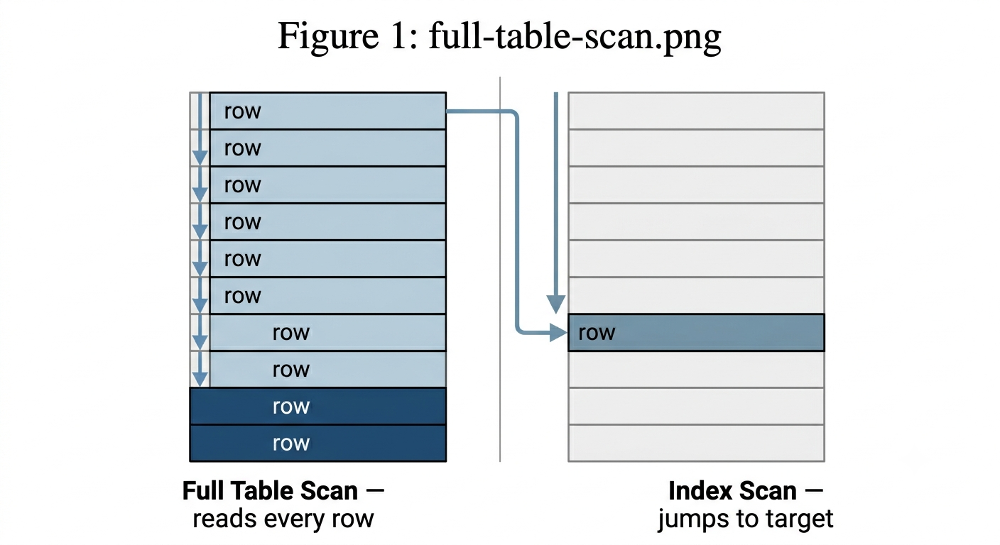
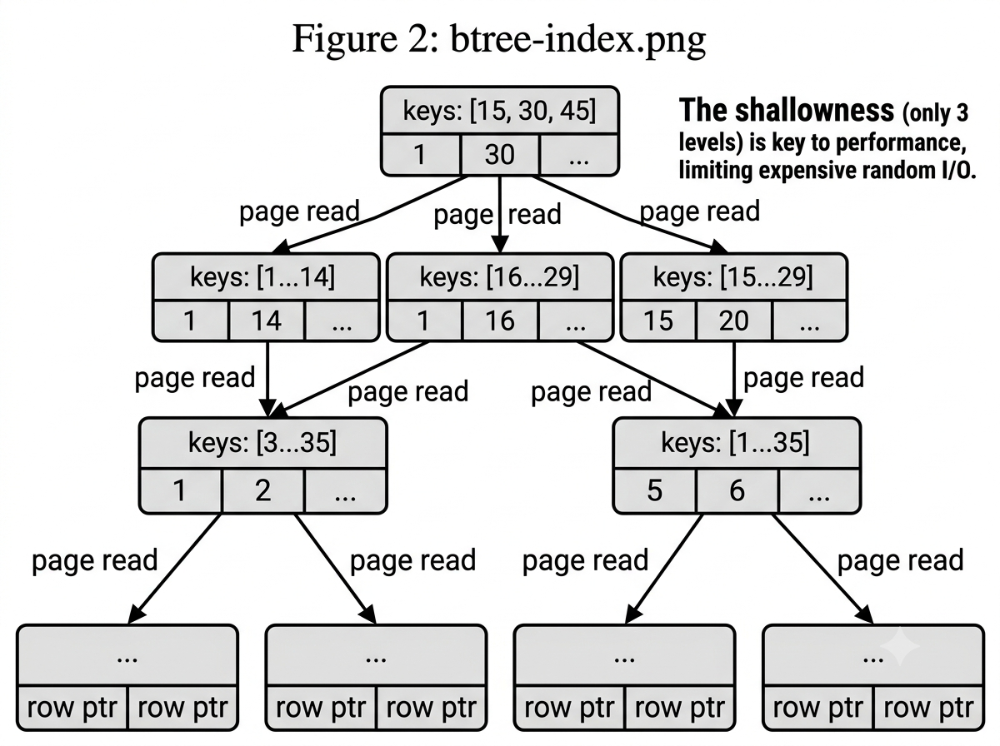
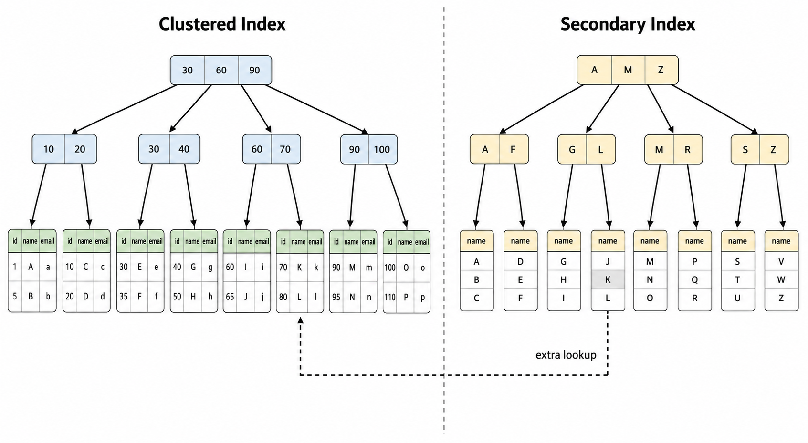
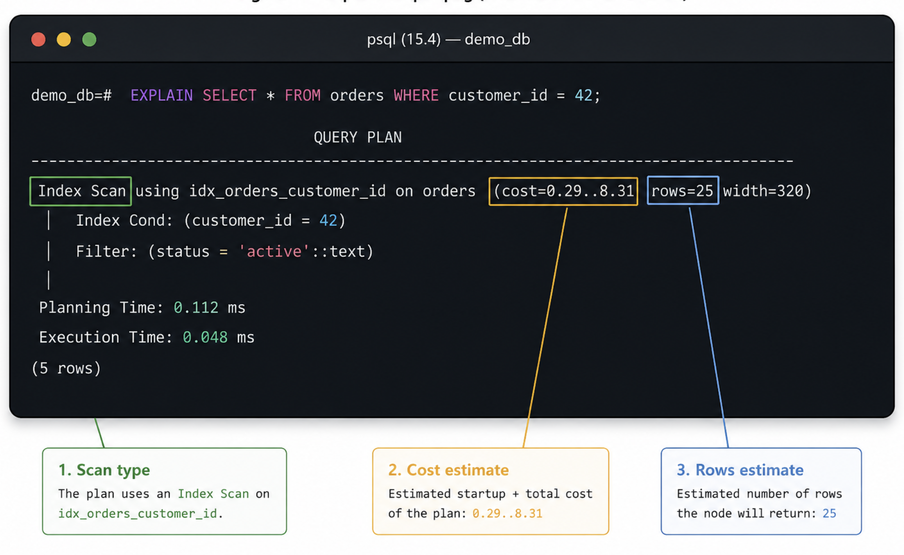
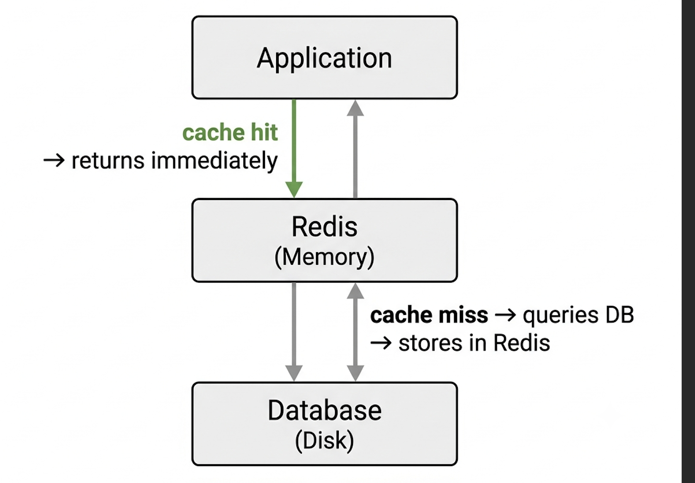
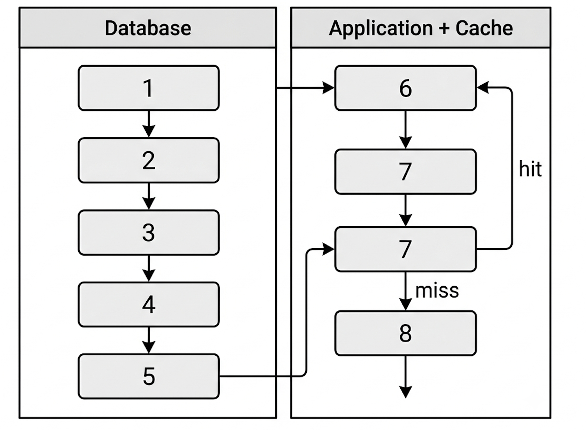

In the last blog, we watched the file system do heroic work: turning a chaotic scatter of magnetic domains into a clean, navigable hierarchy of files and folders. By the end, we left a natural question hanging in the air. If the file system is already doing so much, like grouping related data, journaling writes, and caching hot pages, why do databases exist at all? Why not just dump your users into a text file and be done with it?
The answer is that a file system is brilliant at one thing: storing data. Databases are built to solve a different problem entirely: finding it. Specifically, finding a handful of rows among millions in a fraction of a second. That constraint, "give me exactly these few records, right now, from a sea of data," is what drives almost every decision in database internals. Today we follow that constraint to its logical conclusions.
Why Queries Go Slow
Imagine you have a users table with ten million rows. A new user tries to log in, and your application fires off this query:
SELECT *
FROM users
WHERE email = 'alice@gmail.com';Without any special machinery, the database has no idea where Alice lives in that table. It cannot guess. So it does the only safe thing it can: it reads every single row, from the first to the last, checking each email address one by one. This is called a full table scan, and it is exactly as painful as it sounds.
On ten million rows, a full table scan might take several seconds. Your login page just hung for several seconds. Now imagine a hundred users trying to log in at the same time. The database is now reading the entire table a hundred times over, simultaneously. Performance does not just degrade; it collapses.
And here is the cruel part: the more successful your product becomes, the worse this gets. At ten thousand users, things feel fast. At a million, queries start to drag. At ten million, the database is on its knees. The query did not get worse. The table just got bigger, and a full scan scales linearly with it.

Figure 1. A full table scan reads every row sequentially; an index lookup jumps directly to the target rows.
Disk I/O: The Real Bottleneck
We established in the last blog that disk access is devastatingly slow compared to everything else in a computer. Let's put some sharper numbers to it. A CPU can execute a billion instructions per second. Reading a byte from RAM takes around 100 nanoseconds. A random read from an SSD takes roughly 100 microseconds, which is a thousand times slower. A random read from a spinning hard drive can take 10 milliseconds, which is a hundred thousand times slower than RAM.
Every time a database needs a row that is not already in memory, it pays one of those prices. A full table scan on a large table does not pay that price once; it pays it thousands of times, once for every chunk of data it reads from storage. The gap between "finds it in one disk read" and "reads the entire table" is the gap between a sub-millisecond response and a multi-second hang. Everything in database design, from the data structures and caching layers to the query planner, is fundamentally an attempt to minimize how often and how far into storage you have to reach.
Database Pages: The Unit of Work
Databases do not read individual rows from disk. They read pages. A page is a fixed-size chunk of data, typically 8 kilobytes in PostgreSQL and 16 kilobytes in MySQL, and it maps directly onto the concept of a block that we covered in the file system blog. When the database needs any row, it loads the entire page that row lives on.
This is not waste; it is strategy. If you are reading row 5,000 of a table, there is a very good chance you will want row 5,001 next. Loading them together in one page means the second read is free. The file system exploited spatial locality in exactly the same way, and the database borrows the same intuition.
Filesystem
↓
Blocks (4 KB – 8 KB on disk)
Database
↓
Pages (8 KB – 16 KB logical)
↓
Rows (variable size, packed into pages)The key insight is that the cost model for a database query is not "how many rows did we touch?" It is "how many pages did we have to load from disk?" A query that touches one million rows spread across one million pages is catastrophically expensive. A query that touches one million rows all packed into a handful of pages is much cheaper. Database designers think in pages almost exclusively.
What an Index Actually Is
Think about how a textbook index works. Instead of reading every page to find mentions of "binary search," you flip to the back, look up B, and find "binary search, pages 142, 207, 391." Three seconds instead of three hours. A database index is the same idea applied to rows.
An index is a separate data structure that the database maintains alongside your table. It holds a sorted copy of one or more columns, and for each value, a pointer to the exact page and row where that data lives. When you query by an indexed column, the database consults the index first, gets a precise location, and loads just that page from the main table. No scanning. No guessing.
Creating one is a single SQL statement:
CREATE INDEX idx_email
ON users(email);After this, that same login query does not read ten million rows anymore. It walks the index, finds Alice's location in microseconds, and loads a single page. The query time drops from seconds to milliseconds. The table did not change; you just gave the database a map.
The trade-off is worth knowing: indexes are not free. Every write to the table, meaning every INSERT, UPDATE, and DELETE, also has to update every index on that table. A table with ten indexes pays ten index-update costs on every write. For read-heavy workloads, that is a wonderful trade. For write-heavy ones, you add indexes carefully.
B+Trees: The Data Structure Behind Most Indexes
You might wonder why the index is not just a sorted list. A sorted list is great for binary search in memory, but terrible on disk. Binary search on a list of ten million items takes about 23 steps. Each step is a random jump to a different position in the list. If each position is on a different disk page, that is 23 separate disk reads, each costing hundreds of microseconds. We can do much better.
The answer is the B+Tree. A B+Tree is designed specifically for the economics of disk access. Instead of each node having two children like a binary search tree, a B+Tree node holds dozens or hundreds of keys and has a corresponding number of children. This is called a high branching factor.
The result is a very short, very wide tree. An index over ten million rows might only be three or four levels deep. To find any row, you read three or four pages: the root, an internal node, maybe another internal node, and the leaf. Four disk reads instead of twenty-three, and on a busy database, the top levels of the tree are almost always cached in memory, meaning the real cost is often just one or two disk reads to reach the leaf.
[20 | 40 | 60]
/ | | \
[5|12|18] [25|32] [45|55] [65|80|95]
| |
[row ptrs] [row ptrs]
Figure 2. A B+Tree index has a high branching factor, keeping the tree shallow and minimizing page reads per lookup.
B+Trees also handle range queries naturally. Because keys are sorted within each node, finding all users whose email starts with "alice" is just a matter of walking a contiguous range of leaf nodes. A hash index, which maps each key to a bucket, would be faster for exact lookups but cannot handle ranges at all. That is why B+Trees dominate general-purpose relational databases, while hash indexes appear as a specialized option for exact-match workloads.
Clustered vs. Secondary Indexes
There are two fundamentally different flavors of index, and the distinction matters for performance.
A clustered index stores the table's data directly within the index structure itself. Rather than pointing to rows elsewhere, the leaf nodes contain the actual row data, physically organized by the indexed key.
A secondary index, like our idx_email, is a separate B+Tree that holds the indexed column and a pointer back to the primary key. To fetch the full row, the database first traverses the secondary index to get the primary key value, then traverses the clustered index with that value to retrieve the actual row. That is two tree lookups instead of one. For queries that touch many rows, this double-lookup cost adds up.

Figure 3. A clustered index stores data alongside the index; a secondary index stores pointers back to the primary key, requiring a second lookup.
Databases have an optimization for this: the covering index. If all the columns a query needs are present in the secondary index itself, the database never has to touch the main table at all. A query like SELECT email FROM users WHERE email = 'alice@gmail.com' can be satisfied entirely from the index on email. The data is right there in the leaf node. This is sometimes called an index-only scan, and for the right queries, it is extremely fast.
How Does the Database Choose an Index?
A real table might have a dozen indexes. When a query arrives, the database does not just grab the first one it sees. It runs a component called the query optimizer, which estimates the cost of several possible execution strategies and picks the cheapest one.
The optimizer uses statistics it collects about your data: roughly how many rows exist, how many distinct values a column has, and how data is distributed. If an email column has ten million distinct values, the index on it is extraordinarily selective because it will immediately narrow ten million rows down to one. If a status column has three possible values, like "active," "inactive," and "pending," an index on it is barely selective at all. A full scan might actually be faster, because at least the full scan reads pages sequentially rather than jumping around the disk following index pointers.
This is not a detail to memorize; it is a mindset to develop. Indexes on high-cardinality columns with many distinct values tend to be valuable. Indexes on low-cardinality columns often are not. The optimizer is trying to model this mathematically so you do not have to think about it on every query.
Reading the Query Plan with EXPLAIN
You do not have to take the optimizer's word for it. Every major database lets you peek inside its decision-making with the EXPLAIN command:
EXPLAIN
SELECT *
FROM users
WHERE email = 'alice@gmail.com';In PostgreSQL, this produces output like:
Index Scan using idx_email on users
(cost=0.56..8.58 rows=1 width=204)
Index Cond: (email = 'alice@gmail.com')
Three things are worth reading here. The first is the scan type: "Index Scan" tells you it used the index. "Seq Scan" would mean a full table scan. "Index Only Scan" means it never even touched the main table. The second is cost: this is the optimizer's estimate in arbitrary units; lower is better, and the number after the .. is the total cost. The third is rows: how many rows the optimizer expects to return. A big mismatch between this estimate and the reality often means your statistics are stale and need refreshing.
You do not need to understand every field yet. But getting into the habit of running EXPLAIN on slow queries is one of the most useful skills a backend developer can have. It turns database performance from guesswork into diagnosis.

Figure 4. EXPLAIN reveals whether the database chose an index scan or a sequential scan, and its estimated cost.
Indexes vs. Caching: Two Different Problems
At this point, a common confusion comes up: "If I just cache everything in memory, do I even need indexes?" The answer is that they solve completely different problems, and you almost always want both.
| Indexes | Caching |
|---|---|
| Help locate data | Store data for fast retrieval |
| Reduce search work | Reduce repeated work |
| Persistent, meaning they survive restarts | Temporary, meaning they are lost on restart |
| Usually disk-backed | Usually memory-backed |
| Speed up any query using that column | Speed up the exact same query repeated |
An index tells you where data is. A cache keeps frequently accessed data nearby. If you cached the result of a slow query, you have avoided the database entirely for that specific question. But the next slightly different question, like the same email with a different capitalization or a new user who was never cached, goes straight back to the database, which still has to run an expensive scan if the index does not exist.
Think of an index as the book's index, and a cache as a sticky note on your desk with an answer you looked up recently. The sticky note is faster, but it only works for that exact question. The book's index works for any question, every time.
Application-Level Caching
Databases have their own internal caches (PostgreSQL calls its shared_buffers, and MySQL has the InnoDB buffer pool), but the caching idea does not stop there. Most production applications add another caching layer between the application and the database entirely.
The pattern looks like this. Without a cache, every user request drills straight through to the database:
User
↓
Application
↓
DatabaseWith a cache layer sitting between them:
User
↓
Application
↓
Cache ──── hit ────→ return immediately
↓ miss
Database
↓
store in cache, returnOn a cache hit, the database never wakes up. On a cache miss, you pay the full database cost but then store the result so subsequent requests for the same data are free. This matters enormously for read-heavy workloads where the same data is requested constantly: a product page that a thousand users load per minute, a leaderboard that refreshes every few seconds, or a user profile that every API call needs to verify.
Redis: The Most Popular Cache
Redis is, by a wide margin, the most common tool for this job. It is an in-memory data store: everything lives in RAM, reads happen in microseconds, and it can handle hundreds of thousands of operations per second on modest hardware. Redis is not a database replacement; it is a purpose-built, blazingly fast short-term memory for your application.
A typical cache interaction in code is almost comically simple:
# Check cache first
user = redis.get("user:42")
if user is None:
# Cache miss — go to database
user = db.query("SELECT * FROM users WHERE id = 42")
# Store for next time, expire after 5 minutes
redis.setex("user:42", 300, serialize(user))
return userBeyond simple key-value caching, Redis has native data types that make it useful for a surprisingly wide range of problems: sorted sets for leaderboards (Redis can rank a million scores and return the top ten in one operation), lists for message queues, counters for rate limiting, and sets for tracking unique visitors. It also has expiration built in. You set a TTL (time-to-live) on each key, and Redis automatically evicts it when the time is up, keeping your cache from growing stale forever.

Figure 5. Redis sits between the application and the database, absorbing repeated reads before they reach disk.
The End-to-End Journey
Let's walk through the full lifecycle of that login query one more time, now that we have all the pieces:
redis.get("user:42")SELECT * FROM users WHERE email = 'alice@gmail.com'idx_email and estimates cost of index scan vs. sequential scanemail is high-cardinalityThe entire thing, including index traversal, row fetch, and cache write, takes a few milliseconds end to end. The same query without the index would have taken seconds. Without the cache layer, the database would feel that full cost on every single login across every user simultaneously.

Figure 6. The full query journey: optimizer selects a plan, B+Tree traversal locates the row, and the result is cached for future requests.
Key Takeaways
- Full table scans read every row; performance degrades linearly with table size. They do not scale.
- Databases optimize for minimizing disk page reads, not row reads.
- An index is a separate sorted data structure that maps column values to row locations, eliminating scans.
- B+Trees power most relational database indexes because their high branching factor keeps trees shallow and limits page reads to a handful per lookup.
- Clustered indexes store data in the tree itself; secondary indexes store pointers and require a second lookup.
EXPLAINreveals whether a query uses an index or a full scan and estimates its cost.- Indexes and caches solve different problems: indexes find data efficiently; caches avoid repeated database trips entirely.
- Redis accelerates read-heavy workloads by keeping frequently accessed results in memory, milliseconds away.
Putting this alongside our previous blog, a clean progression emerges:
File Systems
↓
Data is stored and organized on disk
Database Indexes
↓
Specific data is found without scanning everything
Caching (Redis)
↓
Repeated access becomes essentially free
Query Optimization ← next time
↓
Entire queries become efficient at scaleWe have covered how the database finds a single known record. But real applications are rarely that simple. A real-world request looks more like: "Find all orders placed in the last 30 days, grouped by customer, sorted by total amount."
When queries involve joining multiple tables, filtering by ranges, and aggregating data all at once, a single B+Tree index isn't enough. The database can't just jump to a single page; it has to orchestrate a complex dance of sorting, filtering, and merging data streams in memory.
How it decides to execute those complex maneuvers without choking your CPU is exactly what we will unpack next time when we dive deep into Query Optimizers. We will look at how the database translates your declarative SQL into an actual physical execution plan, calculates the mathematical cost of different strategies, and chooses the fastest path to your data.
Series · How Databases Actually Work
Part 2: A Deep Dive into the Query Optimizer →